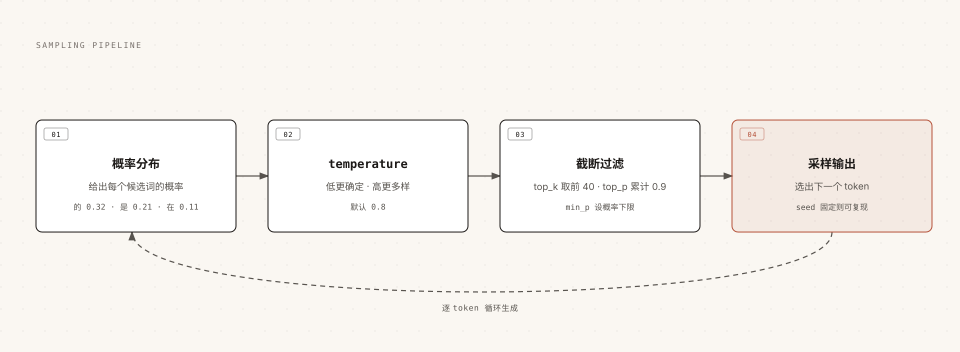

Ollama 対話と生成パラメータ
この章では、Ollama を対話的に使う際の詳細を掘り下げます：複数の対話方式、モデルの「性格」を制御する生成パラメータ、コンテキストウィンドウ、思考モード、マルチモーダル対話など。
3つの対話方式：インタラクティブ、単発、パイプライン
同じ run コマンドでも、使い方が異なると適用シーンも異なります。
インタラクティブモード：複数ターンのチャット
直接実行して対話に入ると、モデルはこのセッション内のコンテキストを覚えているので、連続した追質問に適しています：
例
ollama run qwen3.5
単発QA：一問一答
質問をパラメータとして直接続けて、回答を得たらすぐに終了する、一度きりのタスクに適しています：
例
ollama run qwen3.5 "用一句话介绍 RUNOOB 菜鸟教程"
パイプライン入力：スクリプトへの組み込み
パイプラインでテキストをモデルに渡すと、他のコマンドと組み合わせやすくなります：
例
cat README.md | ollama run qwen3.5 "この内容を要約する"
また、対話中に3つのダブルクォートを入力すると複数行テキストを囲むことができ、Enterキーによる改行は送信として扱われません。
生成パラメータ：モデルの「性格」を制御する
モデルが毎回1つの単語（トークン）を生成する前に、内部では同じパイプラインを通過します。生成パラメータは、さまざまな段階でこのパイプラインに介入します。

temperature は確率分布を急峻にしたり平坦にしたりし、top_k / top_p / min_p が低品質な候補を切り捨て、最後にランダムサンプリングで次のトークンを選びます。
よく使われるパラメータのまとめは以下のとおりです（デフォルト値は公式ドキュメントから）：
| パラメータ | デフォルト値 | 作用 | 典型的な使い方 |
|---|---|---|---|
| temperature | 0.8 | 高いほど創造的になり、低いほど厳密になります | コード作成や情報抽出には0〜0.3、クリエイティブな文章には1.0前後 |
| top_k | 40 | 確率上位 k 個の候補からだけサンプリングする | 小さくすると出力がより保守的になります |
| top_p | 0.9 | 累積確率が p に達する候補からサンプリングする | top_k とどちらか一方で微調整する |
| min_p | 0.0 | 最高確率の割合に基づいて候補の下限を設定する | 0.05 は top_p の代替としてよく使われる |
| repeat_penalty | 1.0 | 重複コンテンツにペナルティを与える | 1.1 は同じ話の繰り返しを緩和する |
| seed | 0 | 乱数シードを固定して再現可能にする | テストやデバッグ時に結果を固定する |
| stop | 无 | 指定した文字列に遭遇したら生成を即座に停止する | 余分な挨拶や固定フォーマットを切り詰める |
| num_predict | -1 | 最大生成トークン数、-1 は無制限 | 長い回答の出力長を制限する |
インタラクティブモードでは、内蔵コマンドでいつでも調整できます：
例
>>> /set parameter seed 42
パラメータを永続的に有効にしたい場合は、Modelfile に書き込んで「事前調整済み」モデルにします。これは次章の Modelfile の中心的な使い方です。
seed の効果を検証する小さな実験：seed を固定して同じ質問を2回すると出力は完全に一致します。seed を固定しないと、毎回の回答が異なります。
コンテキストウィンドウ num_ctx：モデルの作業記憶
コンテキストウィンドウは、モデルが一度に「見える」量を決定します。システムプロンプト、対話履歴、あなたの質問を含み、単位はトークンです。
ウィンドウに収まらない内容は切り捨てられます。これが、モデルが「話しているうちに最初を忘れる」根本的な原因です。
Ollama はVRAMに応じてデフォルトのコンテキスト長を自動選択します：VRAMが24GiB未満ならデフォルト4K、24〜48GiBならデフォルト32K、48GiB超ならデフォルト256K。クラウドモデルはデフォルトで最大コンテキストを使い切ります。
手動で調整するには3つの入口があります：
例
/set parameter num_ctx 8192
# 方式二：启动服务时设置全局默认
OLLAMA_CONTEXT_LENGTH=8192 ollama serve
# 方式三：API 请求时按需指定（options.num_ctx，见 API 章节）
ウィンドウを大きくする代償はメモリ使用量の増加です。前章の ollama ps で CONTEXT 列を見れば現在値を確認できます。
Ollama をエージェント、コーディングツール、またはオンライン検索のシナリオに組み込む場合、公式はコンテキストを少なくとも64Kに設定することを推奨しています。そうしないと、ツールが返す大量のコンテンツが対話スペースを圧迫します。
思考モード：モデルに考えさせてから答えさせる
推論系モデル（例：qwen3.5、deepseek-r1）は、最初に思考プロセスを出力してから回答を出すことをサポートしています。数学、論理系のタスクに適しています。
Ollama はデフォルトで思考を有効にしており、完全な制御スイッチも提供しています：
例
ollama run qwen3.5 --think "17 乘 23 等于多少？"
# 关闭思考，直接给答案
ollama run qwen3.5 --think=false "用一句话介绍 RUNOOB"
# 通常どおり思考するが、ターミナルには思考過程を表示しない
ollama run qwen3.5 --hidethinking "9.9 と 9.11 はどちらが大きい？"
インタラクティブモードでは、/set thinkと/set nothinkいつでも切り替えられます。
一部のモデルは思考強度の段階をサポートしています。例えば gpt-oss は low、medium、high の3段階だけを受け付けます。指定には、--think=mediumこのような形式を使います。
思考をオフにすると応答時間は明らかに短縮されますが、推論系タスクの正解率が低下する可能性があります。プログラミングアシスタントなど応答速度を重視するシナリオでは、よく hidethinking が選ばれます——思考の質を保ちつつ、端末が思考プロセスで埋め尽くされるのを防ぎます。
マルチモーダル：モデルに画像を見せる
qwen3.5 は画像入力をネイティブにサポートしています。コマンドラインで画像パスを質問の後ろに続けるだけです：
例
ollama run qwen3.5 ./screenshot.png このスクリーンショットはどのページですか？
API と SDK の使い方は少し複雑で（base64エンコーディング）、視覚能力の章で詳しくデモします。さらに構造化出力と組み合わせて「画像から構造化データへの変換」もできます。
構造化出力：回答を信頼できる JSON にする
プログラムにモデルの回答を解析させるとき、毎回フォーマットが異なるのが最も困ります。Ollama はモデルに JSON Schema に従った出力を強制できます。
例
"model": "qwen3.5",
"messages": [{ "role": "user", "content": "介绍 RUNOOB 菜鸟教程" }],
"format": {
"type": "object",
"properties": {
"name": { "type": "string" },
"category": { "type": "string" },
"free": { "type": "boolean" }
},
"required": ["name", "category", "free"]
},
"stream": false
}'
返される content は schema に厳密に準拠した JSON 文字列であり、そのままプログラムオブジェクトにデシリアライズできます。
Python で Pydantic を使って schema を定義し、結果を検証するのが最も手軽な組み合わせです。完全な実践はモデル能力の章にあります。
2つの実用的な詳細：構造化出力時は temperature を0に下げるとより安定します；format だけを書いてプロンプトで要件を説明しないと、効果が落ちる可能性があります。プロンプトでもフィールドの意味を一度説明するのが最善です。
複数ターン対話のコンテキスト管理とよくある落とし穴
インタラクティブモードの各ターンの対話で、Ollama は完全な履歴をコンテキストウィンドウに連結してモデルに送信します。これには、必ず知っておくべき2つの結果があります。
第一に、セッション内ではモデルは記憶を持ちますが、終了（/bye）すると記憶はクリアされます。再度 run するとまったく新しいセッションになり、前回話したことを覚えていません。
第二に、履歴が長すぎると最も古い内容が先にウィンドウから押し出されます。モデルが冒頭の約束事を突然「忘れる」という形で現れます。
対応する実用的な対策：
| 症状 | 原因 | 対策 |
|---|---|---|
| 対話をやり直すとモデルが完全に忘れる | セッションのコンテキストはプロセスをまたいで保持されない | 重要な約束事は Modelfile の SYSTEM に書き込むか、API でメッセージ履歴を自分で管理する |
| 長い対話の後半で「記憶喪失」になり始める | コンテキストウィンドウが満杯になり、古い内容が切り捨てられる | num_ctx を増やす；または段階的に新しいセッションを開き、重要な結論だけを持ち越す |
| 長いドキュメントを貼り付けると回答が遅くなり品質も落ちる | 長い内容がコンテキストを圧迫する | 関連する断片だけを貼る；文書全体は RAG 知識ベースのソリューションに任せる |
これらの制限を回避して永続的なメモリを実現するには、API を使用して messages 配列を自分で管理する必要があります。それが API 章の主役です。
インタラクティブモード内蔵コマンド早見表
会話プロンプトで直接使用できる組み込みコマンドは以下のとおりです。いつでも /? を入力すると、現在のバージョンの実際のリストを確認できます。
| コマンド | 機能 |
|---|---|
| /? | ヘルプと利用可能なすべてのコマンドを表示 |
| /set parameter <名前> <値> | temperature、num_ctx などの生成パラメータを調整 |
| /set system "<プロンプト>" | システムプロンプトを一時的に変更 |
| /set think / /set nothink | 思考モードをオン/オフ |
| /clear | 現在のセッションコンテキストをクリアして再開 |
| /load <モデル> | ターミナルを終了せずに別のモデルに切り替え |
| /save <名前> | 現在のセッション（システムプロンプトとパラメータを含む）を新しいモデルとして保存 |
| /show info / /show parameters | 現在のモデル情報 / 現在有効なパラメータを表示 |
| /bye | 会話を終了 |
その他の拡張/save は特筆に値します。調整済みパラメータの会話をそのまま新しいモデルとして固化できる、Modelfile を書かないクイックカスタマイズに相当します。次章で Modelfile 方式と比較します。